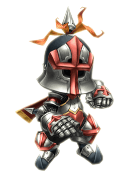
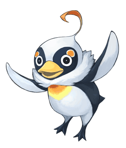

7 |
キャラクター紹介 |
 ●レオ ●レオ【クラヴァット族】 幼くして母を失い、故郷をなくした小さな王様。この地を治める偉大な王「アークロード」の資格を持つものとしてクリスタルに選ばれ、「思い出をかたちにする魔法」建築術のちからを手に、故郷の再建をめざす。 |
|
 ●チャイム ●チャイム【クラヴァット族とセルキー族のハーフ】 レオの教育係として姉弟同然に育ち、身辺をサポートしてきた、有能な女性。ひとたび王のベルの音を聞けば得意の魔法で駆けつけ、建設の手助けや国民の管理、果ては王様の睡眠時間まで、あらゆる国務と生活をサポートしてくれる。 |
|
●ヒュー＝ユルグ 【リルティ族】 かつて主人公の故郷でクリスタルキャラバンを統率し、数々の冒険をくぐりぬけてきた歴戦の勇士。国家再興の重荷を担うレオに対し、いつも誠心誠意から助言を与えている。 |
|
●パブロフ 【種族不明】 城下町にたどりついた王様一行の前に突然姿を現し、えらそうな態度で彼らを試そうとするあやしい鳥。いつもは憎まれ口ばかり叩いているが、王国のなりたちにかかわる重大な秘密を握っているらしい……。 |
 |
 |
 |